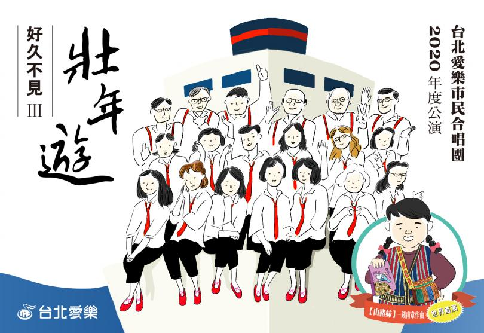
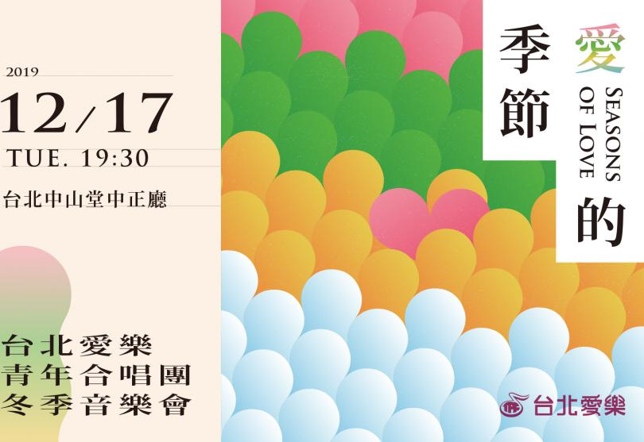
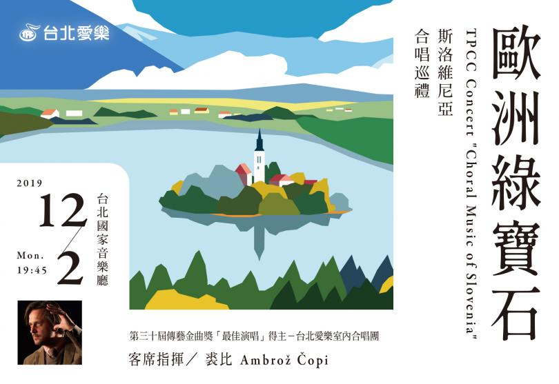
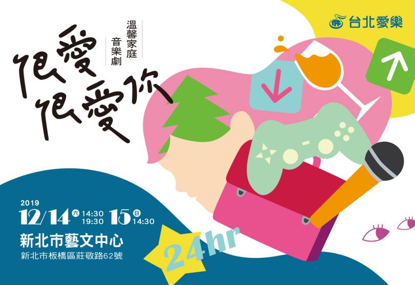
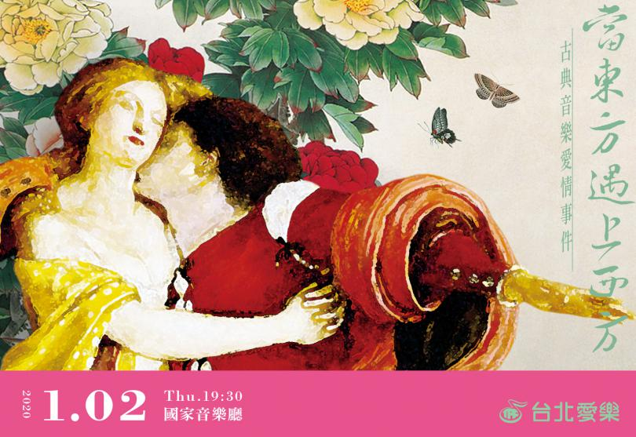

藝文推薦｜【好久不見系列3】《壯年遊》台北愛樂市民合唱團年度音樂會
2020-04-06 Leave a comment
「壯遊」是胸懷壯志的經歷，是為了體驗世界之大，閱歷人生之美的過程....
Read more

音樂會｜《愛的季節》台北愛樂青年合唱團冬季音樂會
2020-07-11 Leave a comment
2019《愛的季節》台北愛樂青年合唱團音樂會，我們為您獻上維多利亞、布斯托偉大的奧秘》以及韋瓦第...
Read more

演出｜《歐洲綠寶石》斯洛維尼亞合唱巡禮
2020-07-22 Leave a comment
第三十屆傳藝金曲獎「最佳演唱」得主－台北愛樂室內合唱團，首度邀請金牌指揮家裘比， 精選多首斯洛維尼亞當紅作曲家新作...
Read more

音樂劇｜愛樂劇工廠—溫馨家庭音樂劇《很愛．很愛你》 2019饗宴新北市-愛上劇場系列節目
2020-07-08 Leave a comment
辛苦的家長們，給自己一個喘息的機會。你的辛苦，讓我們來發聲。
Read more

藝文推薦｜古典音樂愛情事件–當東方遇上西方
2020-08-16 Leave a comment
「問世間情為何物？」，自古以來，「愛情」總成為藝術家麾下扣人心弦的主題....
Read more